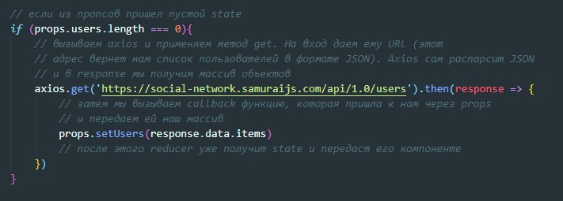
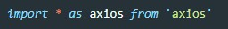

REST (от англ. Representational State Transfer — «передача состояния представления»)
CRUD - create readr update delete
Что бы общаться с сервером нам понадобятся 5 сущностей:
GET - get запрос нужен, что бы просто получить данные от сервера, он не подразумевает что вместе с ним будут отправлены какие-то данные на сервер (request payload нет)
POST - запрос наоборот подразумевает то, что мы на сервер что-то передаем (например данные формы)
PUT - значит что мы хотим что-то обновить (изменить). (request payload есть)
DELETE - как и get запрос ничего не отправляет на сервер (данных нет). Все что должен передать этот запрос это ID удаляемого элемента, а он зашивается в URL
Для отправки запросов на сервер можно использовать нативные способы JS (fetch запросы), то если мы используем React то лучше всего использовать библиотеку, которая называется axios
Что бы установить эту библиотеку в терминале вводим команду:
npm install axios -saveУ нас есть компонента, которая через пропсы получает callbck функцию, которая в случае если придет из reducer пустой state она пошлет в reduser данные которые будут state-ом по умолчанию.
Поэтому мы в самом компоненте пишем вот такой код:
Перед началом работы с axios нужно библиотеку импортировать
Эту строчку можно прочитать так: импортируем все как axios из библиотеки axios
response которые вернет axios вернет объект с ключами: